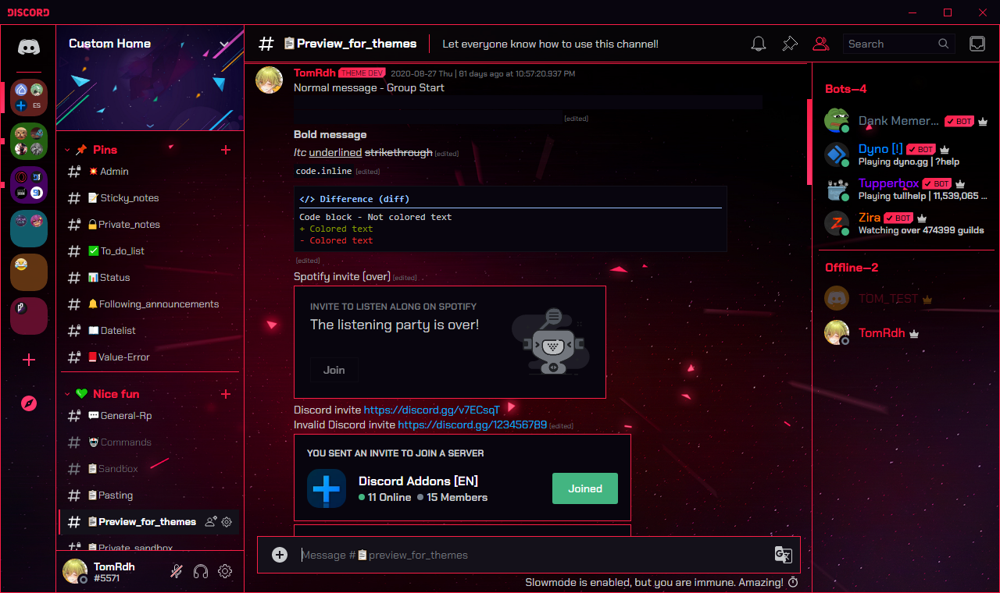
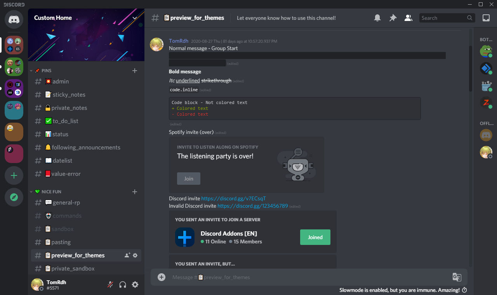
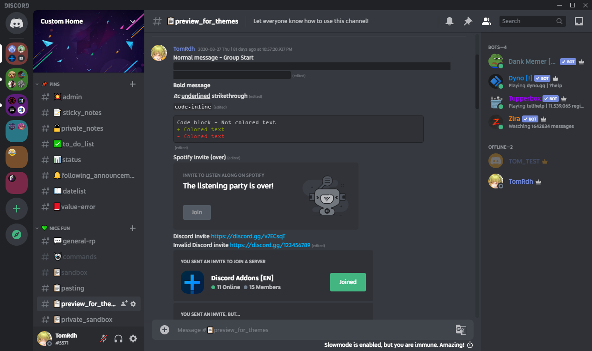
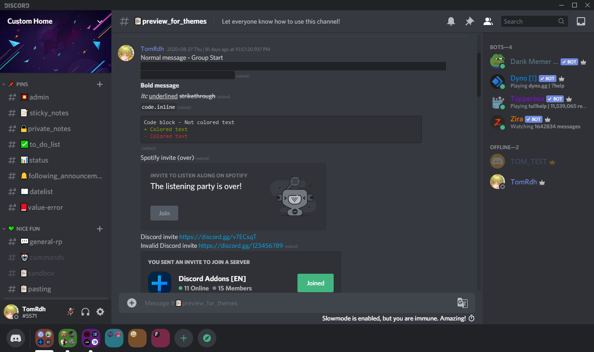

Theme previews, hover to an image to resize it. Here (only in this page), Blue titles means that's a theme. Green titles means that's a minitheme.
To download and install a theme on BBD, click on "Download" links, click "Raw", save with Ctrl + S in the themes folder.
Navigation
External Links
Opera GX Gaming Theme
WARNING: The best theme I ever made!!! A gaming theme inspired by Opera GX supporting both default themes and a maximum amount of official plugins. Also supports some other Discord pages like login screen and Discord Developer Portal on browser.
 Preview: OGGT:0
AMOLED Dark Theme
Do you know the hidden AMOLED dark theme on Android with the full black background? Just click 10 times on "Dark theme" in your appearance settings! But you want this theme on PC but it's unavailable? Great news, now it's available! You can download this theme and enjoy using the AMOLED dark theme on PC!
Preview: ADT:273
AMOLED Dark Theme Optimized
This Optimized version of AMOLED Dark Theme changes all backgrounds to full dark.
Preview: ADTO:173
Always Display Channel Buttons
Allows you to see what buttons you have for each channel without hovering on it. Useful to test some channel settings.
Preview: ADCB:5
BetterDiscord Light Theme Fixer
BetterDiscord (currently the v1.0.0) is not optimized with the light theme. This minitheme optimizes colors for a better experience with light theme.
Preview: Showing the old BBDLTF:3 because I can't update to BD v1.0.0 on Canary
Blur Email
This mini-theme allows you to hide your email adress when you enter in User Settings and makes your email more private. Hover on the email to reveal it. Similar theme: YouTube Blur Emails.
Preview: BE:3
Compact Channels and MemberList
Compact Channellist and Memberlist. This is a customizable theme, you can change some variables in the theme file.
 Preview: CC:7 - Compact memberlist in beta
ContextMenus Old Style
You don't like the new Discord update that changed background colors when you hover on an option in a contextmenu? This theme allows you to go back to the old contextmenus update. This doesn't break any plugin, it changes only some colors just for appearance.
Preview: CMOS:3 - Image from YTGamer/bdthemes
Custom Font (for Discord)
Allows you to change the font used in all your Discord interface and the font for codelines/codeblocks. Similar theme: Custom Font (for Browser).
 Preview: CFFD:5
Green SpotifyControls
Allows you to easily change all colors and background colors for the SpotifyControls plugin. Change the colors in the theme file.
Preview: GSC:1
Remove Nitro Tab
Hides the Nitro channel in private channels list, but you can use Alt + Up/Down Arrows shortcuts (for Windows) to access to it.
Preview: RNT:1 - Image from YTGamer/bdthemes
Serverlist At Bottom
Moves the serverlist at the bottom, like Guilded. Supports ONLY with these themes:
✅ One of my fullthemes or my minithemes
✅ A theme optimized with ServerlistAtBottom
✅ A theme that has only color properties or doesn't move elements.
✅ Or the native Discord light and dark themes
 Preview: SAB:6
Textarea Max Height Modifier
Are you bored with the small space that Discord allows in textareas when you're writing long messages? This customizable theme allows you to modify the max height. You'll have more text shown in your textarea!
Preview: TMHM:2
Typing At Top Of Chat Box (chatbox = textarea)
Moves the "Someone is typing…" and some other things at the top of the textarea. Just like on mobile!
Preview: TATOCB:2
UT00_AllUTilities
A bit complex to understand, but it allows you to highly customize some parts of your UI, and with some other settings.
Preview: UT00AU:5
Updates
Did you see a difference between a theme preview and your one? Or did you see something recently changed? You can see what exactly changed here.